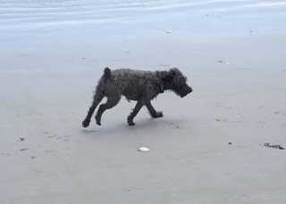
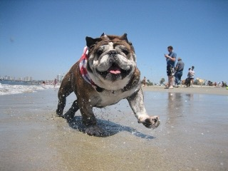
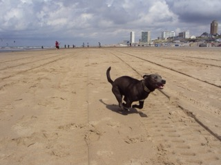
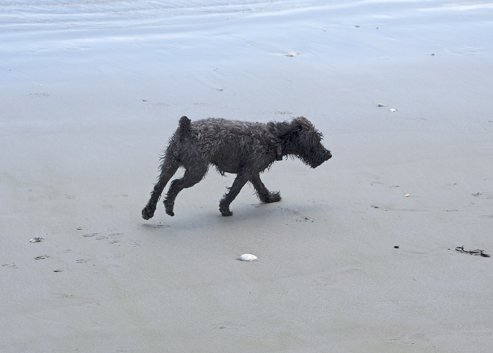

备份
相册备份
进行中

IMG_4821 6.5 MB 已完成
IMG_4822 4.8 MB 备份中
IMG_4823 7.1 MB 等待每张都含配对视频剩余 8 分钟
一张实况，两个文件一起写。

实况 · 3.0 秒相册里看到的是一张照片；硬盘上必须是两个文件，还各带一份相同的 UUID。
静帧是 HEIC 或 JPEG，配对视频是 MOV，约 3 秒，拍摄前后各 1.5 秒。MOV 里有一条 still-image-time 轨道，决定长按时的封面帧。
两个文件里各写了一份相同的 UUID：静帧在 MakerApple 的 ContentIdentifier，视频在 QuickTime 的 content identifier。UUID 相同，才是一张实况。
在系统相册里，这层关系还存在于 Photos.sqlite；文件一旦离开相册，能带走的只有文件内的那份 UUID。
只备份 HEIC，等于把实况拆成了普通照片。
静帧，也是长按时的封面帧。
配对视频，3.0 秒，带声音轨。
4F2A9C1E-8B3D-4E77-9A21-7C5D0E6F8A34
这个 UUID 是文件离开相册后，唯一还能证明「它俩是一对」的东西。
下面用一张静帧和一段配对视频演示。按住图片播放 3 秒；只有静帧时，按多久都不会动。
按住图片，播放 3 秒。
演示用 CSS 模拟运动，不是配对视频本身；要说明的是「少一个文件，就动不了」。
代码只把静帧写进硬盘，却把这张照片标成「已完成」。
backupAsset 只取第一个匹配的资源：有 .photo 就存 .photo，没有才找 .video。配对视频从来没有进入备份队列。
写完之后，这张照片仍然被标记为完成。任务看起来 100%，硬盘上却只有一张 HEIC。
恢复入口不存在，所以问题不会在备份时暴露，只会在用户换机、重装、拔盘之后再打开时出现。
当前实现（简化）
for resource in PHAssetResource.assetResources(for: asset) {
if resource.type == .photo || resource.type == .video {
try await write(resource, to: folder)
break
}
}
// .pairedVideo 从未进入队列
markAssetCompleted(asset)任务完成的条件里，没有「配对视频也在硬盘上」这一条。
所以这次要改的不是一个格式，而是备份的单位：从「一张照片」改成「一组资源，加上它们的关系」。
每一步都有可见的结果；任何一步失败，都不该显示成完成。

IMG_4821 6.5 MB 已完成
IMG_4822 4.8 MB 备份中
IMG_4823 7.1 MB 等待一张实况，两个文件一起写。
两个文件都在、UUID 对得上，才算完成。
照片和视频进同一个事务，一次导入。
回到相册，长按能播，才算真的成功。
这四条决定「导回去是不是实况」，不是实现细节。
从 PHAssetResourceManager 取原始数据。requestImage 返回解码后的 UIImage，再写出去只剩静帧。
回导时在同一个 PHAssetCreationRequest 上添加 .photo 和 .pairedVideo。分两次 performChanges 会得到「照片 + 视频」两条。
两个文件都在、UUID 对得上、大小不为 0，才标记完成；任一条不满足就是「待修复」。
isNetworkAccessAllowed = true，并在界面上说明正在从 iCloud 下载，而不是让进度卡住。
回导（正确写法）
try await PHPhotoLibrary.shared().performChanges {
let request = PHAssetCreationRequest.forAsset()
let options = PHAssetResourceCreationOptions()
options.originalFilename = stillName
request.addResource(with: .photo, fileURL: stillURL, options: options)
request.addResource(with: .pairedVideo, fileURL: videoURL, options: options)
request.creationDate = creationDate
request.location = location
}两个资源必须在同一个 request 里；`performChanges` 结束才算写进相册。
creationRequestForAssetFromImage：它只接受一张图。performChanges：会得到照片和视频两条记录。localIdentifier 当跨设备 ID：换机后无效。.livp 当配对关系：它只是打包方式，解包后仍靠 UUID。.limited 权限当完整相册：备份范围要如实显示。硬盘上有几个文件不算数。要在系统相册里长按，看它是不是一张会动的实况。
0中断、拔盘、退后台，硬盘上不留半份文件。
完整 14 条 Given / When / Then 见 需求全文。
下面是建议，不是已经定下的结论。每条都写了代价，确认后再进开发。
这三条不涉及底层实现，但会决定老用户怎么处理、备份范围多大、重复导入怎么查重。
建议顺序：先修「只备份静帧」，再做回导；旧数据和去重可以后置。
硬盘上只有静帧的旧记录，自动回源重下会让任务量突然变大，也可能触发大量 iCloud 下载。先给用户一张待修复清单，让他选什么时候补。
代价：老用户要手动处理一次，不会在升级后立刻变成实况。
在 .limited 权限下，只备份用户选中的照片；隐藏相册和最近删除不碰。界面上要写清楚实际备份了多少张。
代价：换机后不会自动补齐未授权的内容，用户需要重新选择。
localIdentifier 只在当前设备有效，换机后不能用来判断「这是不是同一张」。跨设备恢复时，用文件内的 UUID 加拍摄时间做组合判断。
代价：同一张照片被重新编辑或重新导出时，UUID 可能变化，需要额外的查重规则。